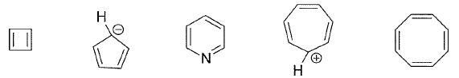

平成24年度 問6 有機化学及び燃料
次の5つの化学種のうち、芳香族性を示すものはいくつあるか。

①
個
②
個
③
個
④
個
⑤
個
正答
③ 個
芳香族性を持つための条件は4つあります。
- 環状構造です
- 完全共役している
- 平面構造をとる
- 一つの環状に (4n+2)個のπ電子を含む（Hückel則）
A～Cを満たしていない化合物は「非芳香族化合物」、Dだけ満たしていない化合物は「反芳香族化合物」と呼ばれます。
左から1番目のシクロブタジエンはπ電子を4つ持っておりDの条件を満たしていないため反芳香族化合物です。
2番目のシクロペンタジエニルアニオンは芳香族化合物です。環内にあるC–原子の孤立電子対を用いてDの条件を満たしています。
3番目のピリジンは芳香族化合物です。環内に6個のπ電子を持つことからDの条件を満たしています。ピロールとは異なり、窒素の孤立電子対は芳香族性に寄与していません。
4番目のシクロへプタトリエニルカチオンは芳香族化合物です。7通りの極限構造式が共鳴したものであり、それぞれの炭素は1価の陽電荷を分け合い非局在化させています。Bの条件を満たしています。
5番目のシクロオクタテトラエンはU字に折れ曲がった構造をしており平面構造ではないため非芳香族化合物です。